从观察到行动：动物如何主动采样社会信息，并把它变成自己的行为
SOE 不是简单的“跟着别人吃”。动物先判断什么时候值得看别人，再从观察内容中提取对自己有用的信息，把它转成自己的行动，并把结果归因给不同的社会来源。SLM 把这条链拆成可以预测、可以在 VTA 中读取、可以被 JAWS 选择性破坏、也可以装进人工 agent 的计算变量。
受限输入的公平比较中，完整 SLM 优于所有经典 RL；SLM+choice persistence 恢复 Current→full-history MLP 改善的 96.9%。
来源标记的 credit、状态门控的信息价值、多时间尺度状态，以及信息采样与行动执行的分离。
一次 Observe 中，VTA DA 从采样策略逐步转向 prediction error，再转向结果/credit 更新。
JAWS 在 session 内和 session 尺度都选择性降低 Active-belief 更新。
看到示范鼠正在进食后 3 秒内，自身 Feed hazard 上升；控制自身状态后仍 +6.09 pp。
通用 GRU 不接收 SLM latent 训练，但学出来的策略仍可被 SLM coordinates 进一步解释。
下面按“行为现象 → 信息价值 → 多时间尺度 → SLM → Feed → agent → VTA → 因果 → 泛化 → 跨物种”组织。重点不是堆结果，而是说明每一层为什么在生物学上需要下一层。
动物学到的不是“多看”，而是“把看见的东西变成自己的行动”
40 只动物中 35 只的 SRI 从早期到晚期上升。learner 的关键变化更集中在 Observe→Active 转化，而不是 gross observation rate。
SRI 总体上升；r_rb=.895，P=2.36×10⁻⁸。
learner 转化平均提高 +.0426；P=.00297。
conversion progress 与 ΔSRI 相关；P=.0086。

社会信息不是一直有用；只有在能改变下一步选择时才有价值
held-out social information value 直接问：加入同伴信息后，对动物真实选择的预测改善了多少？
median +.00365 nats/decision；r_rb=.725，P=.000268。
late−early median −.00378；P=.00194。
离自己的食口越远，社会信息越有用。

同一个行为同时使用“刚才、过去几分钟、昨天”的经验
快速 outcome rule、约 20–33 event 的中程记忆和短暂 cross-day prior 同时存在。
Active/Passive 相对 Unrewarded 改变下一次 stopping / re-entry。
γ=.95–.97，约 4.5–7.5 分钟。
真实 day order 在 501 个排列中排名第 1；P=.001996。

SLM 达到 black-box 的行为预测上限，但仍保留可以被实验直接检验的变量
SLM+choice persistence 超过紧凑基线和 TinyRNN，并与 full-history MLP 不可区分；区别在于 SLM 还给出 policy、APE、RPE 与 social-credit 坐标。
RW、WSLS、Q-family、forgetting-Q、CK 等受限基线全部被 SLM 超过。
恢复 Current→full-history MLP 改善的 96.9%。
r_rb=.667，P=.00169。
r_rb=.862，P=1.59×10⁻⁵。

不写入 SLM 方程的 Social World Model，会独立恢复 SLM 决策坐标，并额外学到“什么时候社会观察真正有用”
SLM 从可解释的 policy、value、prediction error 和来源特异 credit 出发。SWM 则反过来问：不给模型这些结构，只让 recurrent model 从行为序列学习，它会不会自己找到相似的决策空间？又会不会学到 SLM 没有显式写出的状态？
ΔActive = P(Active|z,Observe) − P(Active|z,Other) 能预测一次真实 Observe 最后是否转成 Active；27/27 held-out learner 都高于 chance。
在真实 Visual Block session 中，两个最直接可见线索的 AUC=.491；加入 frozen SWM efficacy 后升到 .581（10/14，P=.0165）。但相对完整 13-cue readout 的额外增量较小且不显著（P=.213）。
把 held-out social trajectory 换成 day/duration 匹配、但内容来自别的训练轨迹后，26/27 动物下降（P=1.49×10⁻⁸）；完全去掉 social channels 重训也得到同方向结果。
预测未来 12-motif 时，SWM 超过最强 direct nonlinear MLP（NLL 1.871；25/27 动物），而且 1、3、5 step horizon 的优势都保留。
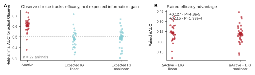
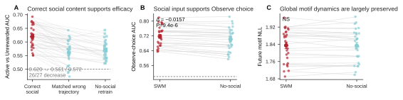
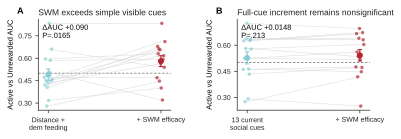
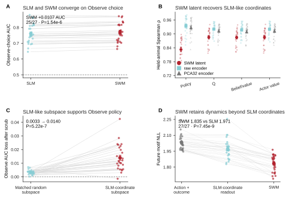
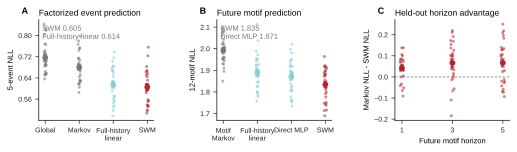
SWM 对生物学故事到底增加了什么？
第一，它给出一个真正前瞻的量，解释动物什么时候值得去采样社会信息。第二，一个完全没有写入 SLM 方程的模型自己恢复出 SLM-like 决策坐标，而且这个子空间确实参与 Observe policy。第三，SWM 还保留了 SLM 坐标之外、预测未来行为序列所需要的动力学。
但两条边界必须保留：policy–efficacy alignment 随训练增强，并不是 learner 特异，因为 non-learner 也会变化；所以不能写成“只有 learner 才出现”。另外，跨任务 pretraining 只在部分低数据条件下提高 sample efficiency，并没有证明 universal foundation model。完整方法 / control authority。
Observe 和 Feed 是两个控制器；真正连接它们的是刚刚采到的内容
自身 Feed 主要由观察者自己的状态控制；社会观察提供一条短时、content-specific 的附加通路。
自身 pre-action state 已能强预测 Feed。
加入 social/dyadic state 后 Feed AUC 继续提高；P=.0120。
观察示范鼠进食后 3 秒内 Feed hazard 上升。
state-residualized effect 仍存在；P=.0445。
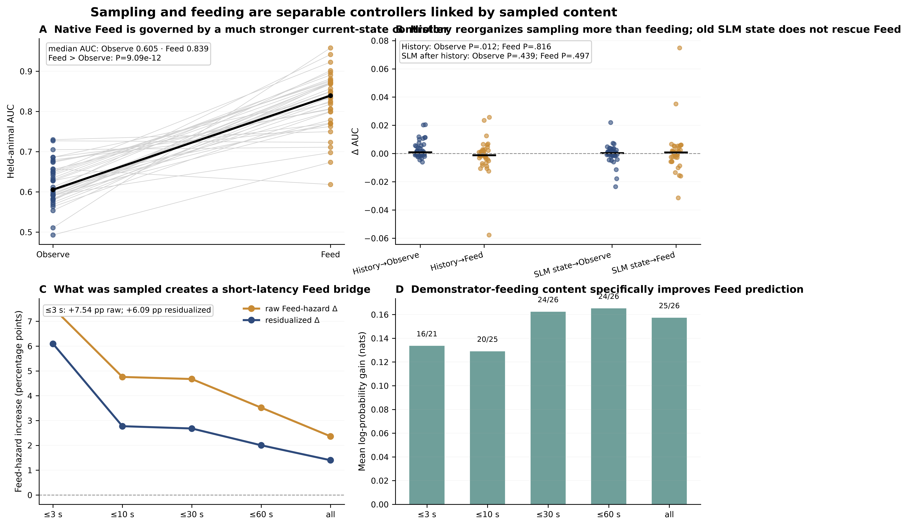
把 SLM 放回环境以后，它能够生成学习；通用 GRU 也会重新发现同一组坐标
Artificial SLM 关闭 Observe choice→social outcome→state update 的循环；另一个没有 privileged latent 的 GRU 独立学习后仍收敛到 SLM-like coordinates。
不重放 held-out outcome，仍能重建整体学习轨迹。
autonomous agent 保留大量真实行为状态组织。
加入 SLM coordinates 后所有 run 的 Brier/NLL/AUC 都改善。

VTA DA 在一次 Observe 中“换着角色工作”：先是 policy，再是 APE，最后是 update
只把 reward 后 DA 汇总成一个数时，多种模型都能解释；真正能判别模型的是 Early→Middle→Post 的时间序列。
5/6 positive；one-sided exact P=.0469。
P=.0416；与学习程度相关。
RPE P=.0195；belief update P=.00586。

Visual Block 与 JAWS 都让学习失败，但失败在不同计算环节
Visual Block 主要减少有用社会内容的进入；JAWS 主要破坏 VTA-dependent Active credit。
Observe→Active .320→.193；8/10 lower，P=.00391。
同一 metric 下的 timing reference。
Active-belief ON−OFF 全部更低；P=.001953。
Normal→Full JAWS Δ=−.0847；P=.003906。

SOE 训练形成的社会学习状态，会影响之后面对陌生食物和社会威胁时的行为
observational fear 与 SAFN/food neophobia 是两种不同的后续任务，但 prior SOE experience 都改变了动物如何使用社会信息。
D1 shock velocity；P=.00433；late shock observation 也增加。
shock-velocity change δ=−.944；P=.00433。
social-trained 更快开始吃；P=.01948。
初始 feeding engagement 更持续；P=.00866。

SLM latent 可以预测“以后会怎样泛化”，而且不同 latent 对应不同的生物学结果
同 6 只 Social-trained 小鼠后来进入陌生食物和 observational-fear 实验。新的分析不再把所有后续行为压成一个总分，而是问：SOE 中形成的具体计算变量，能不能预测与其功能相匹配的后续表型？
严格 leave-one-mouse-out 中，SLM credit family 相比只用 late SRI、ΔSRI、late conversion、Δconversion 的行为 family，在 6/6 小鼠中都降低预测误差。median absolute error 从 43.83 s 降到 12.43 s；r_rb=1，P=.0156；完整 permutation model comparison P=.0486。
SOE 晚期 |APE| 与之后 shock-locked velocity 强相关（exact P=.0167；四个 fear endpoint family BH q=.0333）。这个关系最集中在中间 10 次 shock，timecourse correction 后 q=.0417。
全 40 只 SOE 动物中，Δ|RPE| 对应 ΔObserve→Active conversion（ρ=.615，P=2.4×10⁻⁵），late credit 对应 late conversion（ρ=.558，P=.000181），ΔQ / Δpolicy 对应 ΔSRI。
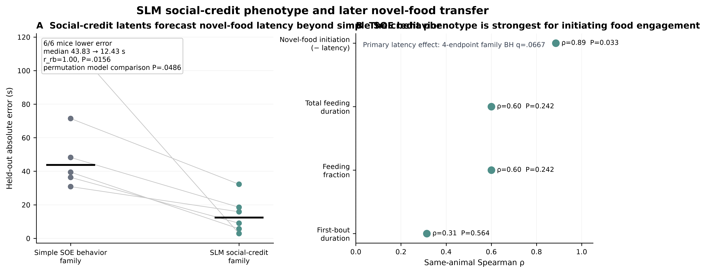
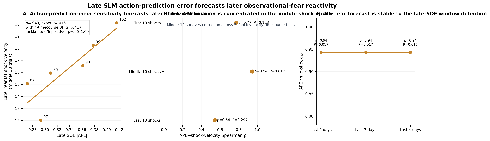
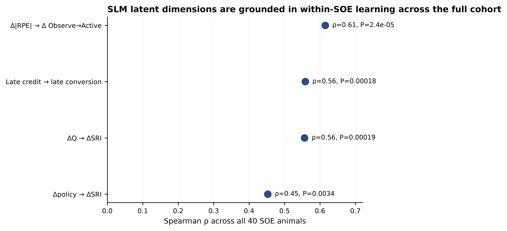
主映射与 exact permutation。
3 种 credit 定义 × 2/3/4-day window。
双映射、nested prediction 与生物学解释。
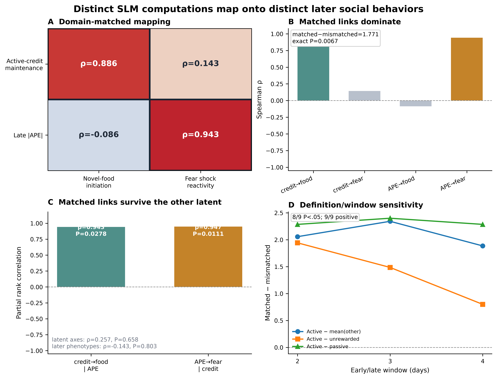
Active-credit maintenance → 陌生食物 initiation：ρ=.886；late |APE| → fear shock reactivity：ρ=.943。
credit → fear 只有 ρ=.143；APE → food 为 ρ=−.086。不是一个“总体社会性” latent。
matched−mismatched contrast=1.771；food 与 fear outcome 分别做全部 720×720 exact permutation。
不是“哪个 latent 都能预测哪个行为”：social credit 和 APE 分别映射到不同的后续表型
把 2 个 latent × 2 个后续行为放进同一张 2×2 映射里，直接检验匹配关系是否强于不匹配关系。
严格 out-of-sample 审计
food 的 nested credit-family model 为 R²=.713，permutation P=.0625；但相比同样 nested 的 simple-behavior family，6/6 小鼠绝对误差更低，完整模型比较 P=.0486。fear 的 APE family 为 R²=.307，P=.0514，但 predicted↔observed rank 为 ρ=.829，P=.0111；与此同时，简单 SOE behavior 也能解释一部分 shock-velocity variance（R²=.548，P=.0333）。因此现在最强的表述不是“SLM latent 在所有后续任务都碾压行为”，而是不同计算 latent 会预测与其生物学功能匹配的后续表型，其中 social-credit 对 novel-food initiation 的增量价值最清楚。
较早的四面板 nested-validation 图继续保留作审计：打开 v2 图。

nested leave-one-mouse-out 与 exact permutation。
支持 food 6/6 更低 held-out error。
first / middle / last shock epoch 与校正后的统计。
最后 2、3、4 天 SOE 定义的稳健性。
SLM latent 与原 SOE 学习指标的关系。
完整生物学解释、模型比较和 prospective prediction。
跨任务、跨物种真正反复出现的是四个计算，而不是一套完全相同的方程
每个外部数据集都明确标注究竟检验 source credit、information gating、multiscale state 还是 sample→action separation。
大鼠 demonstrator>moving object、macaque source-aware state；primate self/other RPE 暂按 literature/audit 级别。
SOE、cooperative role×uncertainty、Aeon partner history 相互呼应。
Human、rat DANDI001169 与 macaque structured state 都通过了更强的 matched comparator。
SOE 是直接证据；marmoset gaze→evidence→decision 是目前最接近的外部架构类比。
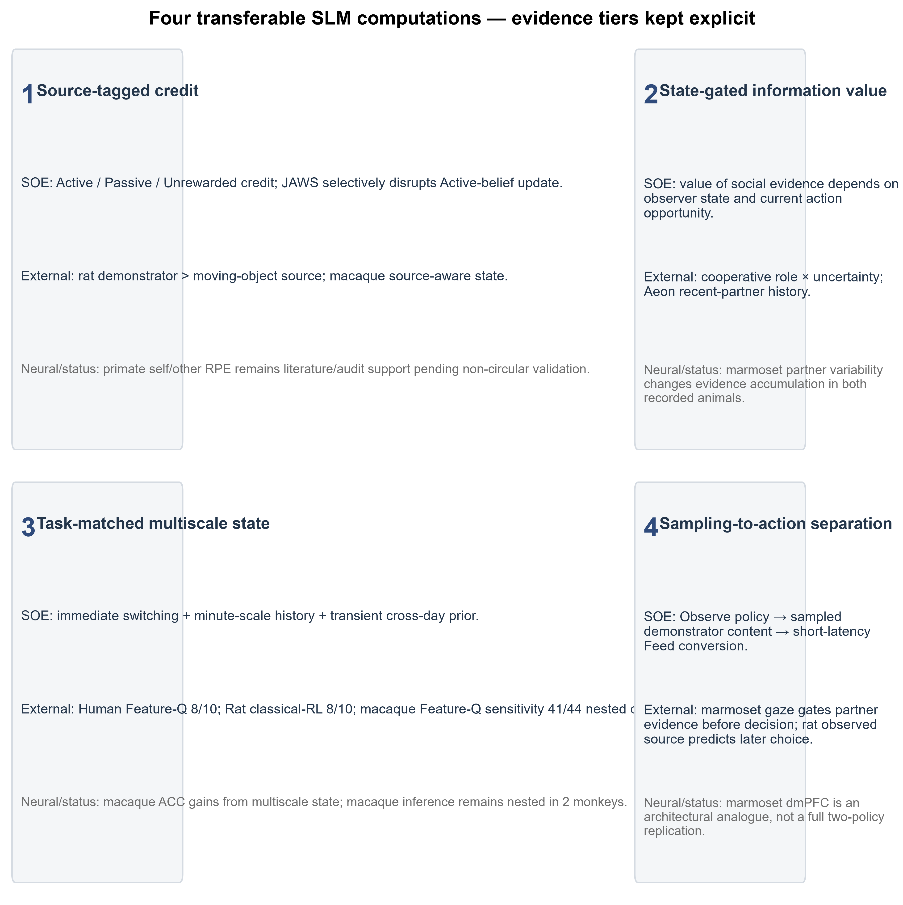
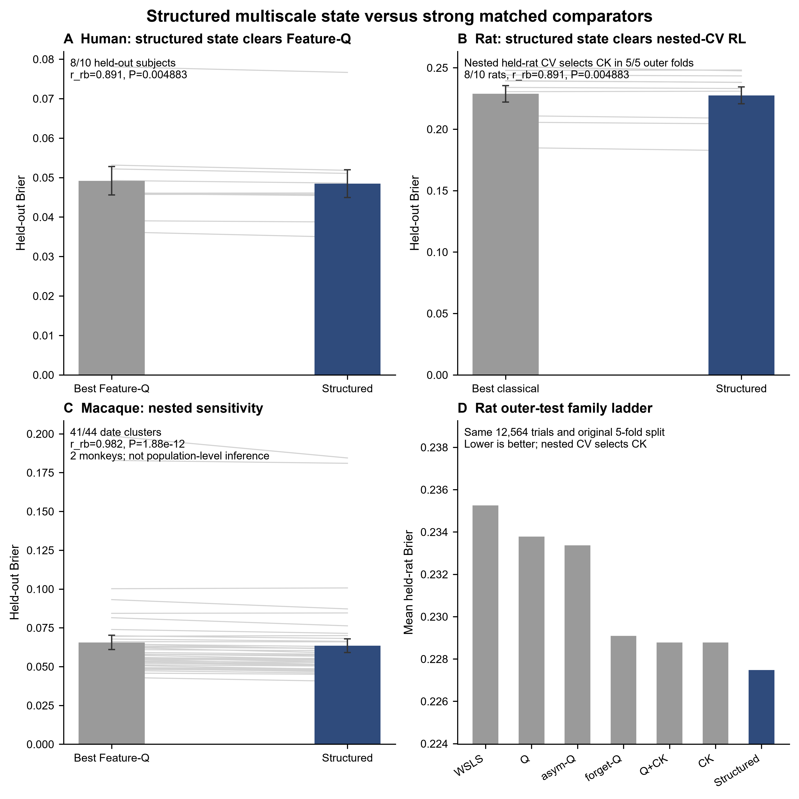
同一 OOF contract 下 structured multiscale 优于 nested held-rat CV 选出的最强 classical RL；CK 在 5/5 outer folds 被选中，r_rb=.891，P=.00488。独立的 training-fold BIC sensitivity 也得到完全相同的选择与 outer-test 结果。
Brier / NLL / AUC 都支持 structured multiscale：P=.00488 / .00488 / .00293。绝对效应不大，但不是单一 metric 的偶然优势。
严格复用原 violation filter、5-fold held-rat split；test rat 从未参与 comparator family 的选择。
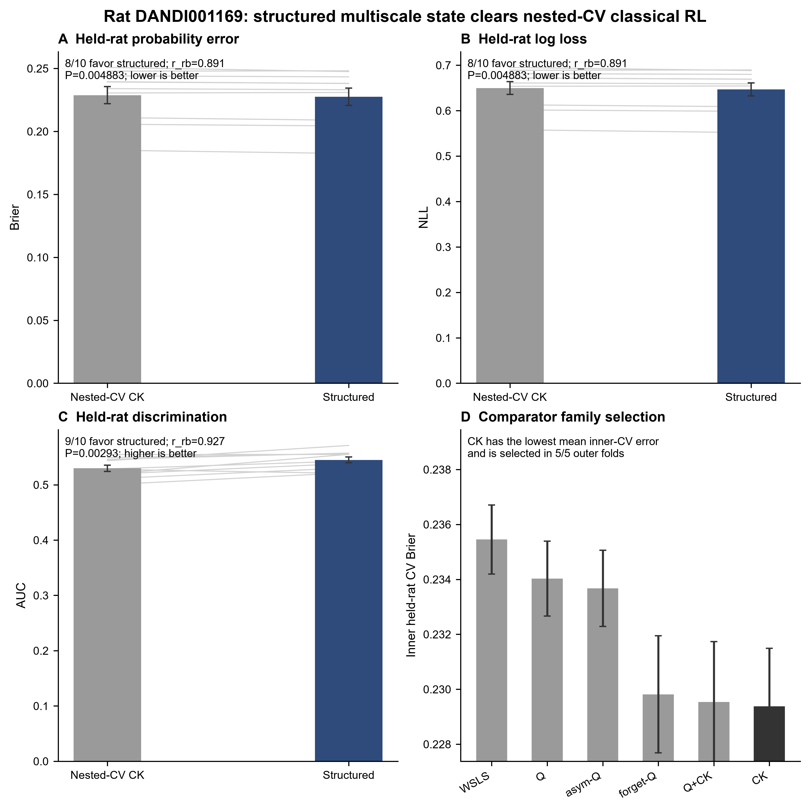
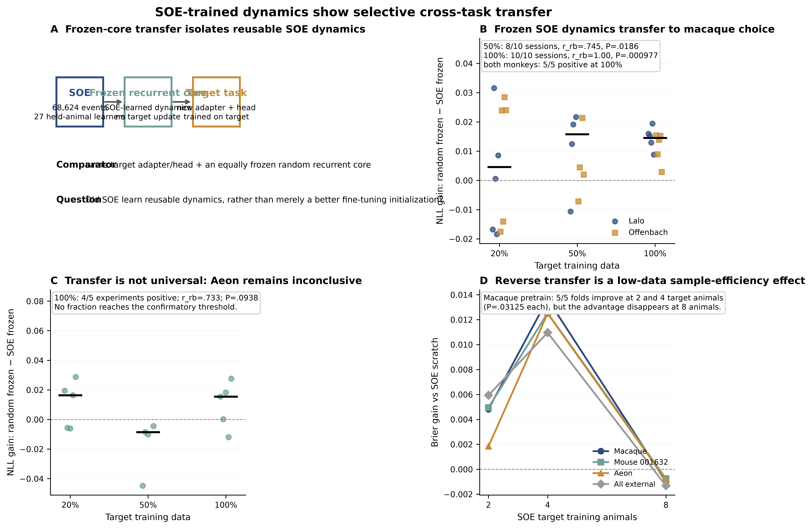
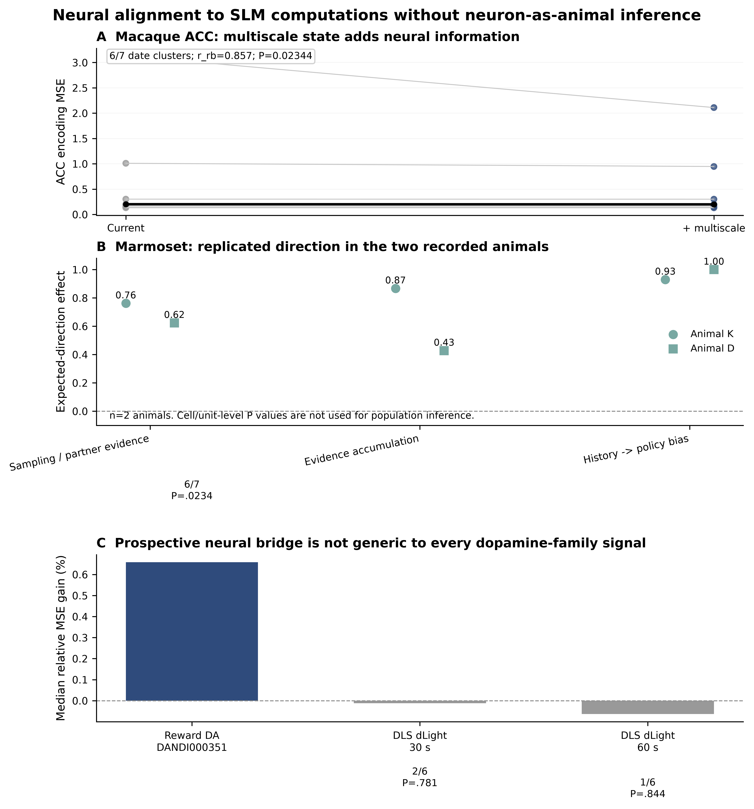
所有关键数字都可以回到精确 CSV / 机制说明
中文页面强调生物学逻辑；数值 authority 与英文版共享同一套版本化结果。
四个核心计算、comparator 审计与 frozen-core transfer。
Human / rat / macaque 的 matched comparator、独立统计单位与 inference boundary。
10 只 held-out rat 的 classical vs multiscale Brier。
每个 outer fold 内所有 classical family 的 inner held-rat CV score。
Brier / NLL / AUC 的 paired held-rat 结果。
same-animal、family correction、nested LOOCV 与下一步独立验证。
按生物学 domain 分组的 exact test 与 family correction。
每个训练 fold 内重新做 latent-family selection 的 out-of-sample 检验。
切换回英文版本与更完整的审计表。